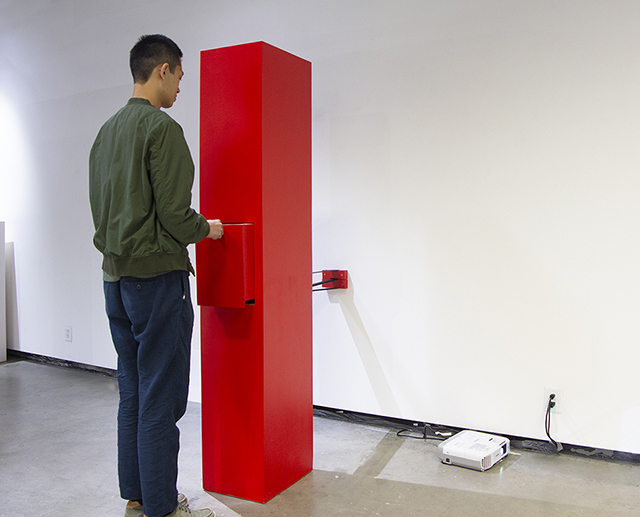

P a s t
p r o j e c t s
D r a w e r
S i m u l a t o r
2 0 1 9
Drawer Simulator consists of a video projection and an interactive object. The object is a 5-feet-9-inches high red cabinet with a single drawer in the middle. Viewers are invited to pull the handle on the drawer. As one pulls the drawer, not only does the drawer got pulled out, the whole red cabinet is drawn towards the viewer, as if the object is actively approaching them, creating an element of surprise. When the handle is released, the drawer pulls itself back along with the red cabinet rolled away.

The video projection combines three stop motion videos of a person walking
slowly towards the camera and slowly walking away afterwards. Everytime
the person approaches the camera, a red thing on his close, in his hand, or
over his shoulder will cover the entire view. Be it a lobster, a red ball
or a red light. At that moment the whole wall is projected red, like
the red cabinet. These videos are projected on to a 5-feet-9-inches
high wall right across from the red
cabinet.
The person/artist performing for the camera is 5-feet-9-inches high too.
The artist spent a lot of time making the red cabinet. He hand sanded the plywood surfaces over and over, and applied red paint more times than needed. The cabinet is about the same size as the body of the artist, in both height and width. As viewers watches the video of the artist approaching them in the projection, and as they interact with the red cabinet, the two subjects connect. The red cabinet becomes the artist's avatar to do the walking motion in real life. The artist is also part of a drawer simulation since he presents himself inanimate in the stop motion videos while he is "pulled" forward along with the frame rates of the footages.